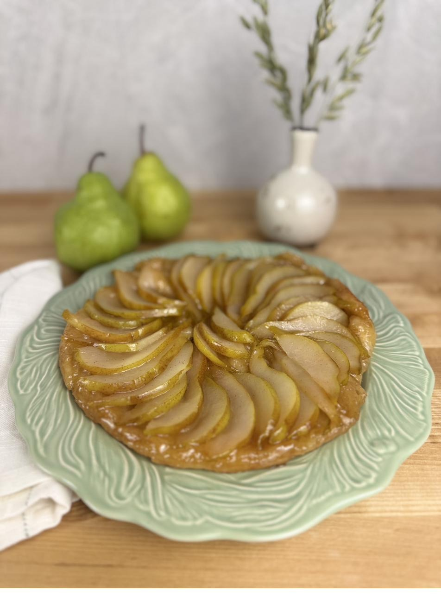
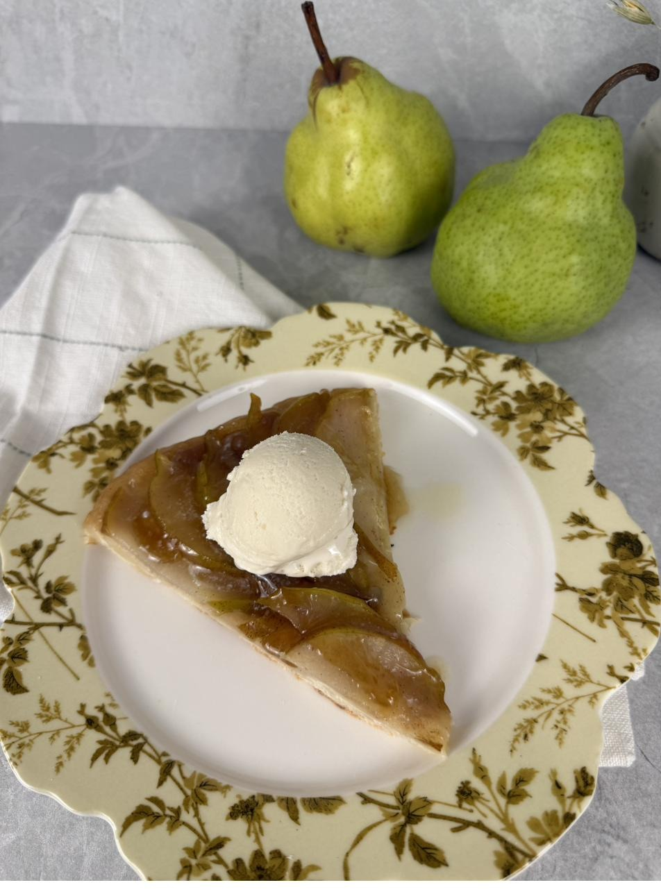

The quiet showpiece — pears turned in dark caramel, then flipped to the light.

This is the one that looks like more than it is. Pears arranged in butter and sugar, cooked down to a deep amber, capped with puff pastry and then flipped to reveal what the heat has been doing all along. It asks for a little nerve at the inversion and rewards you completely. Serve it slightly warm, with something cold alongside.
The inversion is the only moment that asks for confidence. A short rest, a steady plate, one decisive turn.

"This is the tart I photographed on the green plate, then carried to the white platter while the caramel was still warm."